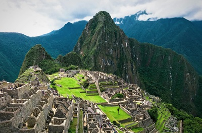
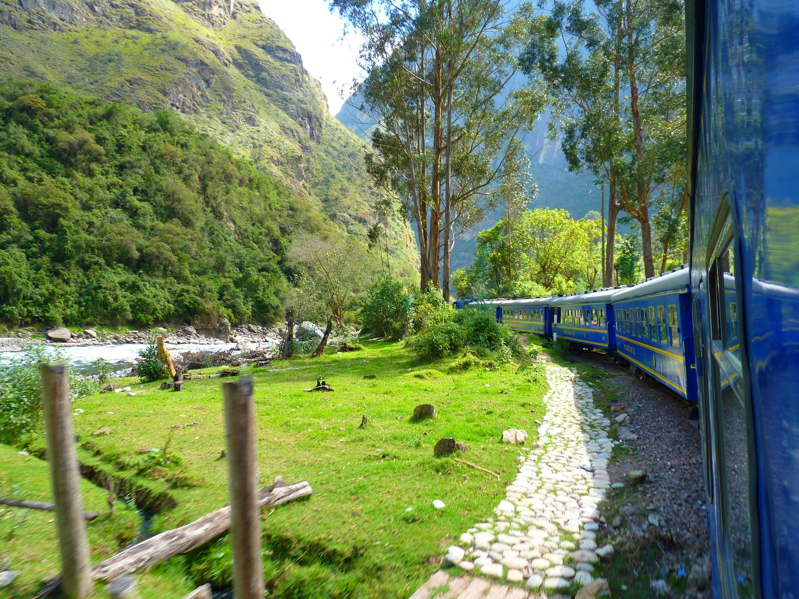

Machu Picchu, maravilla del mundo en Perú, es un destino imperdible. La mejor época es la estación seca (abril-octubre), con acceso vía tren o el Camino Inca.
Éste es un lugar que maravilla a visitantes de todo el mundo por la belleza de sus montañas (Machu Picchu y Huayna Picchu, que significa “montaña joven” en quechua), la hermosa vegetación que rodea el santuario, y sus ruinas arqueológicas, vestigios de una civilización que existió hace cientos de años.
Imágenes



